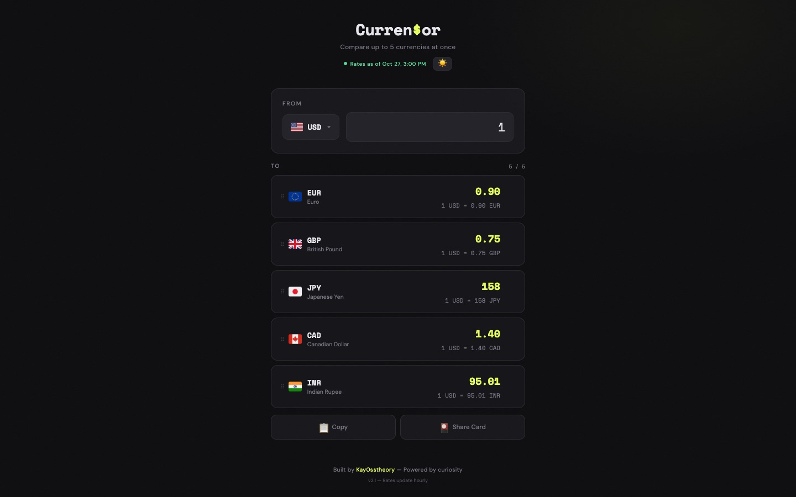

Currensor
A currency converter that also works inside Claude and ChatGPT.
- Problem
- Checking exchange rates meant leaving the conversation.
- Built
- A web converter for 50 currencies, plus a plugin that shows a live conversion card in the chat for 166 currencies.
- Result
- It's publicly launched, listed in the MCP Registry, and anyone can try it.
How it works
- You type an amount, on the website or in a Claude or ChatGPT chat
- Currensor fetches live exchange rates
- The website shows every currency you follow at once
- In a chat, the plugin answers with a live conversion card
Screenshots
